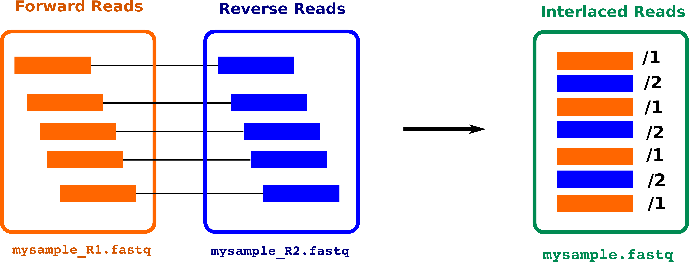
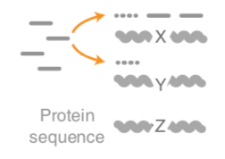

Introduction to metatranscriptomics
Contributors
 Subina Mehta
Subina Mehta  Pratik Jagtap
Pratik Jagtap  Saskia Hiltemann
Saskia Hiltemann
Questions
How to analyze metatranscriptomics data?
What information can be extracted of metatranscriptomics data?
How to assign taxa and function to the identified sequences?
Why study the microbiome?
.pull-left[
- Health care research
- Humans are full of microorganisms
- Skin, gut, oral cavity, nasal cavity, eyes, ..
- Affects health, drug efficacy, etc
] .pull-right[
.image-100[  ]
]
]
- Sometimes referred to as your second genome
- ~10 times more cells than you
- ~100 times more genes than you
- ~1000s different species
Why study the microbiome?
- Environmental studies
- Microbes in the soil affect plants and animals
- Improve agriculture
.image-75[  ]
]
Meta- Omics

This Tutorial: ASaiM pipeline
.pull-left[
- Quality Control
- Assess Quality
- Trim and Filter raw reads
- Filter ribosomal RNA (rRNA)
- Community profiling (Who?)
- Determine composition of sample
- Visualisation
- Functional Analysis (What?)
]
.pull-right[
.image-90[ ]
]
]
]
.footnote[Batut et al Gigascience. 2018 7(6) doi: 10.1093/gigascience/giy057]
Speaker Notes
For this short tutorial, while the workflow is running, these slides can be useful to explain the tools that are being run in that section. After explaining the tools, the workflows should be far enough along to start showing the results
Input: Cellulose Degradation in a Biogas Reactor
Speaker Notes
A 100 µl aliquot of an enriched community from a biogas reactor was transferred to 27 anaerobic bottles containing a rich medium and 10g/L of cellulose as sole carbon source and incubated at 65 °C.
Three bottles were collected at 9 different time points (0, 8, 13, 18, 23, 28, 33, 38 and 43 h) and processed in triplicates. Metatranscriptomic analysis was performed on all time points. Metaproteomics analysis on 4 data points.
Input Format: FastQ Files
- Four lines per read

Speaker Notes
- Four lines per read
@+ identifier on first line, just like fasta- sequence
+- quality score characters
Segue: so what do the quality chars mean?
FastQ: Quality score
-
Each character denotes a different Phred score

-
Phred scores are logarithmic
.small[ Phred Quality Score | Probability of incorrect base call | Base call accuracy — | — | — 10 | 1 in 10 | 90% 20 | 1 in 100 | 99% 30 | 1 in 1000 | 99.9% 40 | 1 in 10,000 | 99.99% … ]
Speaker Notes
- Logarithmic scale
- Different flavours of encoding exist
Preprocessing
In this tutorial we start with some preprocessing steps
Preprocessing: Tools
In this tutorial we start with some preprocessing steps

Speaker Notes | Step | Tools | |:——|——-| |Quality Control reports         | FastQC tool and MultiQC tool | |Trimming and Filtering | Cutadapt tool | |Filter ribosomal RNA | SortMeRNA tool | |Interlace FastQ files | FastQ interlacer tool |
Quality Reports: FastQC
- Generate a web report with quality metrics of your FastQ file

.footnote[see also our dedicated QC tutorial ]
Quality Reports: FastQC
- Many different QC plots
- Example: Per-base sequence Quality plot

.footnote[explanation of different plots: dedicated QC tutorial ]
Speaker Notes
- in the per-base sequence quality plot, a boxplot of the base quality (y-axis) per position in the read (x-axis) is drawn
- often you might observe a drop in quality towards the end of the reads, and may consider trimming ends
- this example is very good
Quality Reports: FastQC
- Many more plots
- See QC tutorial for more information

Quality Reports: MultiQC
.pull-left[
-
Combine multiple FastQC reports into one report
-
Also for outputs of other tools
-
Great when sequencing large numbers of samples ]
.pull-right[ ]
Read Trimming and Filtering: Cutadapt
- Trim low-quality bases from reads
- Filter reads based on length, mean quality score, ..
-
Remove adapters/primers
.image-75[
 ]
] - Many tools: CutAdapt tool, TrimGalore tool, Trimmomatic tool ..
Speaker Notes These are some examples of ways to trim and filter data, but many more are possible and depend on your experiment what is necessary
SortMeRNA
.pull-left[
-
Most RNA sequences will be ribosomal RNA (rRNA)
-
Great for taxonomical assignment (who is there?)
-
Not informative for functional analysis (What are they doing?)
-
Filter out rRNA before doing functional analysis ]
.pull-right[
.image-90[ ]
]
]
]
FastQ interlacer
- Paired-end data often comes in two separate FastQ files
- One file with forward reads, one with reverse reads

FastQ interlacer
- Some tools require a single interlaced FastQ file
- Galaxy has tools for interlacing and deinterlacing FastQ files

Speaker Notes forward and reverse files are ‘zipped’ together into a single file
Community Profile
- We want to identify which organisms are present in our sample, and their relative abundances

- MetaPhlan2 tool for identification
- Krona tool and Graphlan tool for visualisation
MetaPhlan2 tool
- Estimates the presence and relative abundance of microbial cells
- Maps reads against a set of marker sequences
- Caveat: this tool is designed for DNA-seq
- Be careful interpreting abundances when using this tool with transcriptomics data
.footnote[Nat Methods. 2012 Jun 10;9(8):811-4. doi: 10.1038/nmeth.2066.]
Speaker Notes
About the caveat: The theoretical problem is that we quantify species abundance by averaging the coverage of marker genes. Marker genes are supposed to be at the same coverage as they are single copy genes from the same genome, but this is not true for their transcripts. So MetaPhlAn2 on metatranscriptomics gives an idea about the average transcriptional rate of a given species. So it can be used with caution…
Krona tool
- Visualization of community composition, interactive plot
Graphlan tool
- Cladogram visualisation

Genus Abundance
- Tutorial: one timepoint
- Over multiple timepoints:

Functional Analysis
- Pathways
- Gene Ontology
- Biological process
- Molecular function
- Cellular component
- Gene Family
Workflow

Speaker Notes HUMAnN2
- next generation
- HMP Unified Metabolic Analysis Network
- developed by Huttenhower lab
- itself a workflow/pipeline
- basically answering the question about what the microbial community is capable of?
HUMAnN2 tool
- Profiles presence/absence and abundance of microbial community
-
Efficiently characterizes microbial metabolic pathways
- Input
- Interlaced non-rRNA reads
- Taxonomic profile (MetaPhlAn2 tool)
- Output
- Gene families and their abundance
- Pathways and their coverage
- Pathways and their abundance
Speaker Notes
- contains 5 parts -> non rRNA reads, MetaPhlAn taxonomy, NCBI nucleotide db, Uniref 50/90 protein db, MetaCyc/Unipathway.
- Show the Galaxy wrapper
HUMAnN2 Tiered Search
class: top
.left-column70[
- Meta-omic sequences (DNA/RNA)
]
.right-column30[
.image-60[ ]
]
]
]
–
.left-column70[
- Initial screen through MetaPhlAn2 tool: known microbial species
- Database: merging pangenomes of identified species
]
.right-column30[
.image-60[ ]
]
]
]
–
.left-column70[
- Nucleotide-level mapping against database
]
.right-column30[
.image-60[ ]
]
]
]
–
.left-column70[
- Unaligned reads searched against proteinDB (Uniref) through accelerated translated search
]
.right-column30[ .image-75[] ]
Speaker Notes Takes non rRNA reads + MetaPhlAn2 gives list of abundant organism, then it does Nucleotide level pangenome mapping with Bowtie and uses CHocophlAN db giving unmapped and organims specific gene hits, the unmapped reads are further searched against accelerated translated protein database the protein hits are tehn combined with gene hits and metacyc to give the output.
Result: Gene family and pathway abundances
| .image-40[] |
Gene Families Abundances

RPK (reads per kilobase) = sum of alignment scores
Speaker Notes Gene families: groups of evolutionary related protein that perform similar function Pathway: sum over genes catalyzing the reaction Pathway coverage: presence/absence RPK relative gene copy number : is computed as the sum of all alignments scores over a particular gene family UNMAPPED: total number of reads that remained unmapped even after both alignment steps UNINTEGRATED: no pathway detected.
Gene Families to Functional Annotation
Speaker Notes Gene familes are too large depending on the complexity thus to simplify users can regroup gene families using grouping tool, can download mapping files. HUMAnN2 regroups Uniref 50/90 values to Go terms to get a broad overview.
Group Abundances
Speaker Notes Group abundances converts GO terms to Go slim (subset of GO terms) into Mol function, biological process and cellular components.
Gene Families to Functional Annotation


class: top
Output
.left-column30[
Molecular Function
]
.right-column70[ .image-90[] ] –
.left-column70[
.image-90[ ]
]
]
]
.right-column30[
Biological Process
]
–
.right-column70[ .image-90[] ]
.left-column30[
Cellular Component
]
Speaker Notes g is genus s is species level —
Unpack pathway abundances to show genes included
- Renormalize the gene and pathway abundances in copies per million or relative abundance
- This tool unpacks the pathways abundance by including gene families

Function: Cellulose Degradation
- Quantitative analysis of gene family outputs from HUMAnN2 shows upregulation of cellulase
.image-75[]
Speaker Notes explain about datasets first cellulose 1,4 beta-cellulobiosidase responsible for hydrolysis of cellulose Gene encoding for the cellulose-binding domain protein shows an initial decrease and subsequent increase during cellulose degradation. —
Functions associated with a selected taxon
.image-75[]
Speaker Notes In gene abundance, Coprothermobacter and Clostridium were observed to be the most abundant. In this figure we are looking at Coprothermobacter only->Glycolysis is observed to be the most abundant functional pathway across time points in Coprothermobacter
Taxa associated with a selected function
.image-75[]
Speaker Notes This figure shows the contribution of genera to adenosine ribonucleotides denovo biosynthesis across time points. it shows during ATP synthesis, we see clostridium and coprothermobacter in abundance. —
Tabular Outputs from ASaIM Workflow
- Taxonomy (Who?)
- Kingdom, phylum, class, order, family, genus, species, strain
- Function (What?)
- Pathways
- Gene Ontology
- Biological Process
- Molecular Function
- Cellular Component
- Gene Family
Thank you!
This material is the result of a collaborative work. Thanks to the Galaxy Training Network and all the contributors! This material is licensed under the Creative Commons Attribution 4.0 International License.
This material is licensed under the Creative Commons Attribution 4.0 International License.